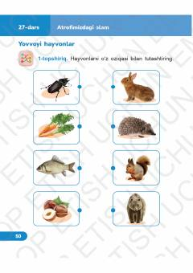

TF2-sinf o'quvchilari uchun tabiatshunoslik fanidan amaliy mashqlar daftari.
Mazkur o'quv qo'llanma 2-sinf o'quvchilari uchun tabiatshunoslik va atrofimizdagi olamni o'rganishga bag'ishlangan darslarni o'z ichiga oladi. Kitobda yovvoyi va uy hayvonlari, ularning xususiyatlari hamda foydasi haqida qiziqarli topshiriqlar berilgan.